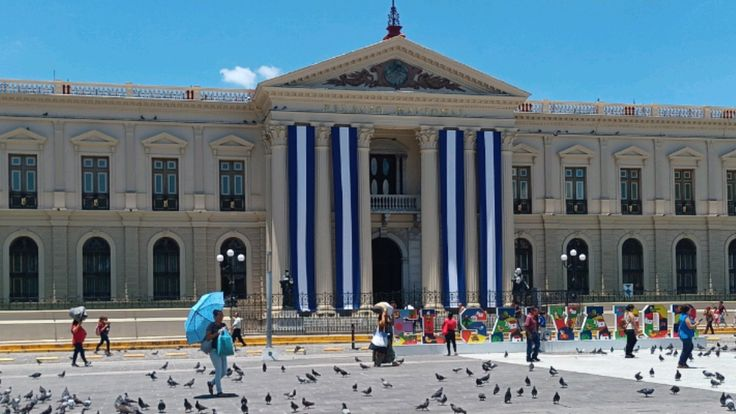
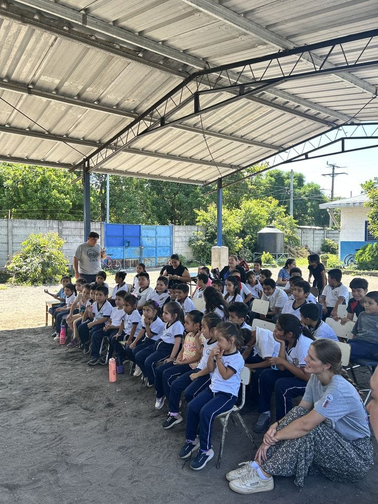

Pre-Colonial Roots
Foundation Era
A rich history of indigenous cultures and communities that laid the early foundations.


A journey through key and defining achievements in our nation's story.
Foundation Era
A rich history of indigenous cultures and communities that laid the early foundations.

Sovereinty Milestone
Declaring independence from Spain and establishing a new nation identity.
Conflict Resolution
The signing of the Chapultepec Peace Accords, ending decades of internal conflict and embracing democracy.

Digital Era & Innovation
Forging new paths through education, technology, and economic transformation for future generations.